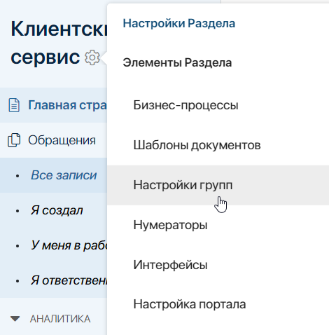
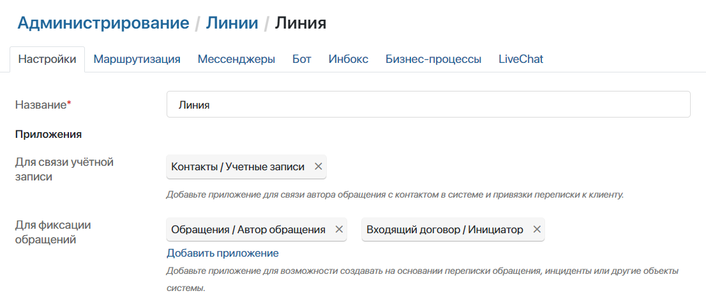
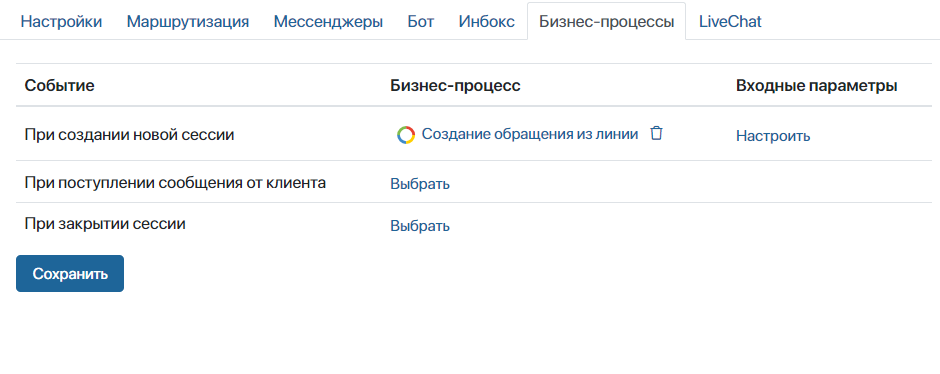
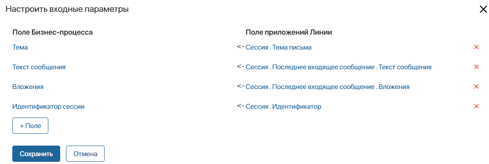
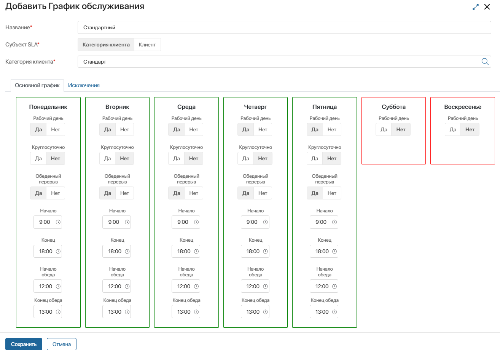
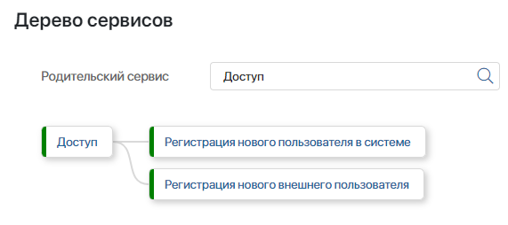
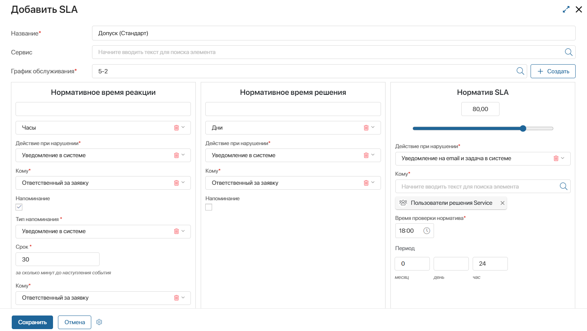
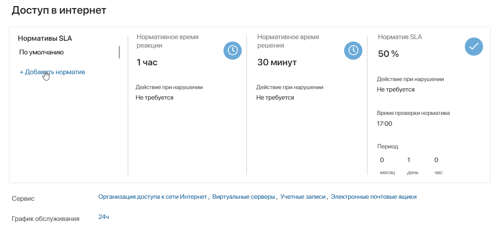
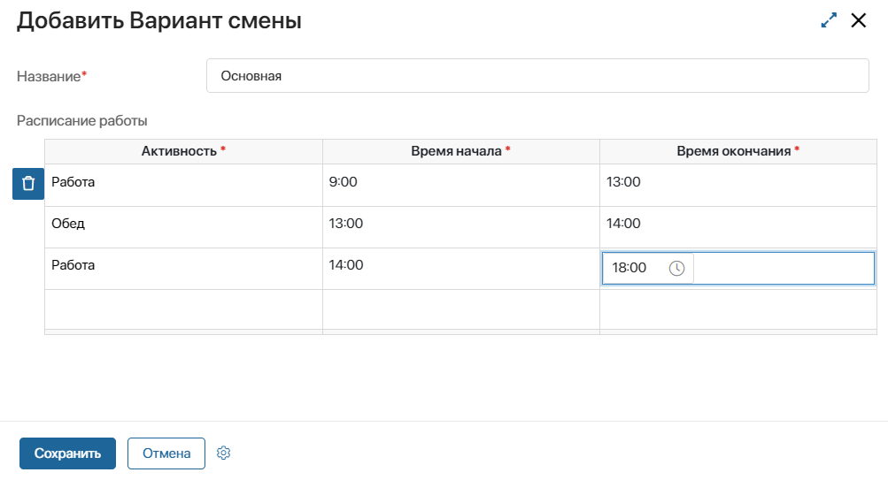
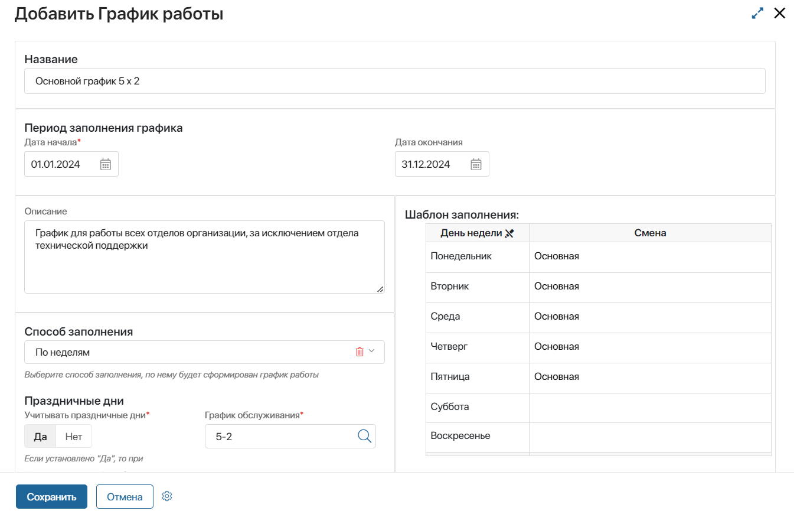

Настройка решения Клиентский сервис происходит в несколько этапов. Сначала выполняются общие настройки и настраивается связь с линиями, после чего заполняются справочники. Рассмотрим все шаги подробнее.
- Импортируйте решение из каталога ELMA365 Store и активируйте его.
- По умолчанию решение заблокировано. Разблокируйте его, чтобы получить доступ к настройкам разделов и приложений.
- Настройте группы и роли пользователей в разделе Клиентский сервис и его приложениях.

Группы помогают ограничить доступ к приложениям и определяют участников бизнес-процессов.
Нажмите +Группа, заполните форму и добавьте участников.
- Настройте права доступа и видимость страниц для пользователей. В зависимости от занимаемой должности у сотрудников могут быть различные права доступа к одному и тому же приложению. Например, юристу достаточно просмотреть карточку обращения и не нужны права на его создание и редактирование. О назначении прав доступа к приложениям читайте в статьях «Доступ к приложению» и «Доступ к данным приложения».
- Перейдите в раздел Администрирование > Модули. Здесь находятся преднастроенные модули решения Клиентский сервис. Для корректной работы решения обязательно должны быть включены Markdown редактор КС , История изменений КС и Обработка отзывов КС.
Важно: модуль История изменений КС включен по умолчанию, но при первичной настройке решения его нужно перезагрузить. Для этого выключите его и снова включите. Это необходимо для корректной работы встроенного в модуль процесса.
Также в модуле История изменений КС обязательно настройте таблицу логирования. Это нужно для того, чтобы в обращениях отображались обновления.
- Настройте сбор обращений из линии. Создайте линию и в её настройках:
- укажите приложение Обращение в поле Для фиксации обращений. Если вы используете решение Управление договорами, то здесь вы также можете указать входящее в его состав приложение Входящие договоры. Подробнее про связь решений Управление договорами и Клиентский сервис читайте в статье «Адаптация решения „Клиентский сервис“ под ваши потребности»;

- на вкладке Бизнес-процессы для события создания новой сессии выберите процесс Создание обращения из линии. Этот процесс входит в решение Клиентский сервис и позволит автоматизировать создание обращений при поступлении нового запроса в линию;

- нажмите кнопку Настроить в столбце Входные параметры и сопоставьте контекстные переменные линии и процесса, чтобы данные передавались корректно.

- Создайте бота и подключите к линии, а также настройте отправку электронных писем пользователям от имени компании. Как это сделать, читайте в разделе Клиентский сервис на странице Инструкция настройки бота и email.
- Заполните справочники.
Справочники заполняются в следующем порядке:
- Справочники для работы с обращениями: категории клиентов, типы обращений, сервисы, SLA и т.д.
- Справочники, определяющие рабочий распорядок операторов.
- Дополнительные справочники для настройки портала.
Справочники для работы с обращениями
Категории клиентов
В этом справочнике создайте список категорий клиентов, для которых нужно использовать разные графики обслуживания и параметры SLA. Например, создайте категории Стандарт и VIP.
Нажмите + Категория клиента, введите её название и укажите, какие компании относятся к этой категории. Если при создании обращения будет указана такая компания, категория будет определена автоматически, и для нее применятся соответствующие настройки и параметры SLA.
Типы обращений
Здесь укажите типы обращений, к которым относятся поступающие запросы. Это могут быть:
- вопрос;
- инцидент;
- рекламация;
- предложение по улучшению.
Для каждого типа задайте уровень приоритета: Высокий, Средний или Низкий.
Чтобы создать новый тип обращения, перейдите в справочник, нажмите +Тип обращения, введите название и установите приоритет. Теперь при указании типа нового обращения, ему будет сразу присваиваться соответствующий приоритет.
Графики обслуживания
В этом приложении можно создать график обслуживания для каждой категории клиента или конкретной компании. Графики используются для расчёта параметров SLA. Например, если обращение поступит в нерабочее время согласно графику, таймер расчёта SLA не запустится.
Чтобы создать график, нажмите + График обслуживания, укажите его название, выберите категорию клиента или компанию и задайте режим работы. На вкладке Исключения можно указать укороченные и праздничные дни.

Сервисы
В этом справочнике создайте список услуг, которые оказывает ваша компания. Например:
- поддержка;
- доступ;
- внедрение;
- гарантийное обслуживание.
Чтобы создать сервис, перейдите в справочник. Нажмите + Сервис, укажите название и описание сервиса. Выберите ответственных, чтобы автоматически маршрутизировать обращения. Ответственными могут быть пользователи, группы или элементы оргструктуры.
Для сервиса нужно обязательно указать SLA. Если справочник SLA еще не заполнен, вы можете создать новый SLA прямо с карточки сервиса. Как заполнить норматив SLA читайте ниже.
Дополнительно в карточке создания сервиса можно указать родительский сервис. Это позволит сгруппировать сервисы по тематике. Например, родительский сервис Доступ может содержать дочерние сервисы Регистрация нового пользователя в системе и Регистрация нового внешнего пользователя. Структура будет отображаться на странице Дерево сервисов.

SLA
Работа с SLA ведется в двух справочниках: SLA и Нормативы SLA.
В справочнике SLA для каждой категории клиента или компании, а также для каждого сервиса, можно задать индивидуальные нормативы обслуживания.
Чтобы создать запись, нажмите + Уровень SLA и в открывшемся окне:
- Введите название и укажите сервис, для которого настраивается SLA. Если вы создаете SLA напрямую с карточки сервиса, то указывать его не нужно, они будут связаны автоматически.
- Установите параметры:

- нормативное время реакции — это максимально допустимое время, за которое оператор должен взять обращение в работу. Выберите действие системы в случае нарушения этого норматива — это может быть оповещение в #ленте, оповещение на электронную почту, задача в системе. Укажите, кто должен получить это уведомление. Настройте напоминание. Укажите, за какое время до истечения нормативного времени оператор должен получить напоминание. Также укажите, куда следует его отправить — в систему или на почту;
- нормативное время решения — это максимально допустимое время, за которое оператор должен найти решение. Отсчитывается с момента, когда обращение взято в работу. Как и для времени реакции, здесь можно задать напоминание и действие, которое выполнится при нарушении SLA;
- норматив SLA — настройте проверку соблюдения нормативов. Установите пороговый процент обращений, для которых должны быть соблюдены параметры SLA. Укажите время и период проверки, например, в 18:00 каждые 24 часа. Определите действие системы на случай нарушения норматива, например, оповещение в системе руководителю отдела сервиса. Таким образом, если в 18:00 процент обработанных в срок обращений за последние сутки будет ниже установленного порога, произойдет эскалация и система отправит уведомление руководителю.
Нормативы SLA
Вы можете создать дополнительные нормативы SLA. Они нужны для того, чтобы применять особые условия в рамках основного SLA, например, для обращений с высоким приоритетом.
Добавить дополнительный норматив можно только в карточке основного SLA.

Нажмите +Добавить норматив, укажите компанию или категорию клиентов, задайте время реакции и решения. Созданные дополнительные нормативы показываются на карточке основного и хранятся в приложении Нормативы SLA. Там норматив можно просмотреть и отредактировать.
Уровни поддержки
Вы можете создать несколько уровней поддержки, например Первая линия и Вторая линия. Это позволит распределять уже созданные обращения между разными группами операторов.
Допустим, первая линия поддержки отвечает за решение типовых задач, а вторая — за сложные технические вопросы. Оператор классифицирует обращение и назначает его на первую линию. Ознакомившись с проблемой, сотрудник перенаправляет обращение на вторую линию, так как вопрос требует более высокой квалификации.
Уровни назначаются на боковой панели в карточке просмотра обращения.
Чтобы добавить уровень, нажмите + Уровень поддержки. В открывшемся окне введите название и укажите операторов, которые будут работать с обращениями на этом уровне.
Каталоги сервисов
Каталоги позволяют классифицировать сервисы на портале, чтобы клиенты быстрее находили нужную услугу в списке.
Для добавления нового каталога, нажмите + Каталоги сервисов. В открывшемся окне заполните поля:
- Название* — введите наименование каталога;
- Сервисы — выберите сервисы, которые будут помещены в каталог;
- SLA — укажите норматив SLA, по которому будут предоставляться сервисы из этого каталога.
Справочники для настройки рабочего расписания
Определите сотрудников, которые будут с работать с обращениями, и настройте их графики работы.
Внутренние пользователи
Этот справочник появляется в разделе Системные справочники при установке решения Клиентский сервис. В него вы вручную добавляете сотрудников, которые будут работать с обращениями.
Активности
Активности — это виды деятельности, которые сотрудники могут выполнять в течение рабочего дня, например, совещания, выезд к заказчику, обеденный перерыв, техподдержка. На главной странице раздела Клиентский сервис сотрудник указывает активность, которой он занят в данный момент. Это позволяет фиксировать фактическое время, потраченное на ту или иную деятельность.
- Введите название активности.
- Укажите, в какое время она учитывается, в рабочее или нерабочее.
- Выберите цвет для активности, указав HEX-код. Этим цветом активность подсвечивается на главной странице раздела Клиентский сервис. Так оператор сразу видит, какая активность выбрана и может переключить её, если нужно.
Варианты смен
Настройте смены для сотрудников, учитывая специфику вашей организации. Например, дневная, вечерняя, ночная, круглосуточная. Каждая смена состоит из активностей с указанием времени, отведенного на их выполнение.
Добавьте активности и укажите плановое время начала и окончания для каждой из них.

В дальнейшем в отчётах можно будет сравнить, насколько фактическое время, потраченное сотрудникам на данные активности, соответствует плановому.
Графики работы
Настройте графики работы для сотрудников. Графики повторяют производственный календарь вашей компании. Если подразделения работают по разному расписанию, создайте несколько графиков. Например, техподдержка работает по 12 часов в день по графику два через два, а остальные сотрудники — восемь часов по стандартному графику пять через два.
Нажмите + График работы и заполните форму:

- Название — укажите понятное название, чтобы в дальнейшем было легко выбрать график из списка;
- Период заполнения графика — по умолчанию указан один год. Вы можете выбрать другой срок действия графика;
- Описание — при желании добавьте описание графика;
- Способ заполнения — выберите, как будет формироваться график, по дням недели или по сменам:
- По неделям — используйте этот формат, если график зависит от конкретных дней недели. Например, с понедельника по пятницу — рабочие дни, а суббота и воскресенье —выходные;
- По сменам — выберите этот формат, если график составляется для сменной работы, например, два рабочих дня и два выходных. Укажите Цикл графика. Для смены «два через два» это четыре дня;
- Праздничные дни — укажите, каким образом официальные праздничные дни учитываются в графике:
- Да — праздничные дни исключаются из графика как нерабочие. При выборе этой опции вам потребуется дополнительно указать график обслуживания клиентов;
- Нет — праздничные включены в график как обычные дни;
- Шаблон заполнения — если график по неделям, то таблица будет представлена в виде списка дней недели. Если вы выбрали способ заполнения по сменам, то будет нумерованный список по количеству дней в цикле. Для каждого дня выберите вариант смены.
Теперь нужно назначить его операторам клиентского сервиса.
- Перейдите в раздел Системные справочники > Внутренние пользователи.
- Выберите сотрудников, для которых будет действовать график.
- Нажмите кнопку С выделенными на верхней панели и выберите опцию Изменить график работы. Укажите созданный график и сохраните изменения.
Информация о рабочем расписании сотрудников будет доступна руководителю в приложении Расписание сотрудников.
Также в решении используются справочники для управления знаниями и настройки портала, которые не влияют на обработку обращений. Они позволяют организовать удобное рабочее пространство для клиентов и сотрудников. Подробнее про заполнение этих справочников читайте в статье «Настроить портал в решении „Клиентский сервис“».
Теперь, после того как вы настроили справочники и параметры, обращения будут автоматически поступать ответственным за соответствующий сервис. Если назначено несколько ответственных, обращение поступает тому, у кого меньше всего обращений в работе на данный момент. Заданный для сервиса уровень SLA контролируется автоматически — оператор получает напоминание, когда истекает время, отведённое на работу с обращением. Если работа не выполнена в срок, происходит эскалация.
Данные об эффективности клиентского сервиса можно посмотреть на страницах отчётов.
Подробнее о том, как операторы обрабатывают обращения, читайте в статье «Работа с обращениями в решении „Клиентский сервис“».